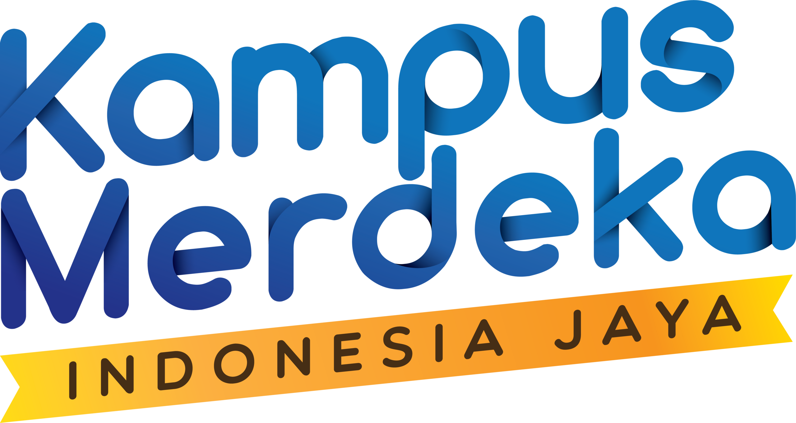
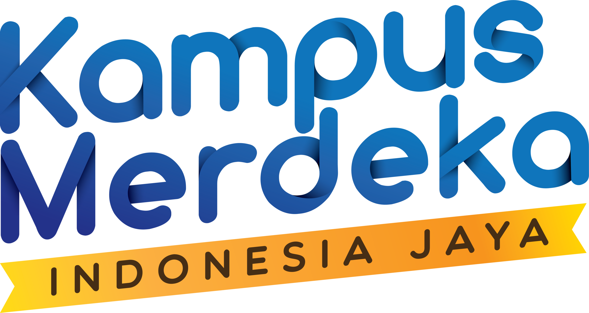

Kelelahan mata, juga dikenal sebagai Computer Vision Syndrome (CVS) atau asthenopia, semakin menjadi isu kesehatan global seiring meningkatnya penggunaan perangkat digital. Meta‑analisis 2024 menunjukkan prevalensi CVS mencapai sekitar 66 % hingga 69 % populasi, dengan puncak hingga 74 % selama pandemi COVID‑19 karena meningkatnya durasi penggunaan layar. Fenomena ini menimbulkan berbagai keluhan visual dan non‑visual yang mengganggu produktivitas dan kesehatan mata.
Selain itu, survei terbaru di Pune (India) April–Mei 2025 menunjukkan 37 % pasien mengalami gejala mata kering karena rata‑rata screen time 6–8 jam/hari; 89 % dari mereka membutuhkan tetes mata, dan kampanye konservasi mata pun diluncurkan. Hal ini menegaskan urgensi makalah ini dalam menyajikan tinjauan ilmiah terkini, faktor risiko, gejala, serta strategi pencegahan dan pengelolaan.